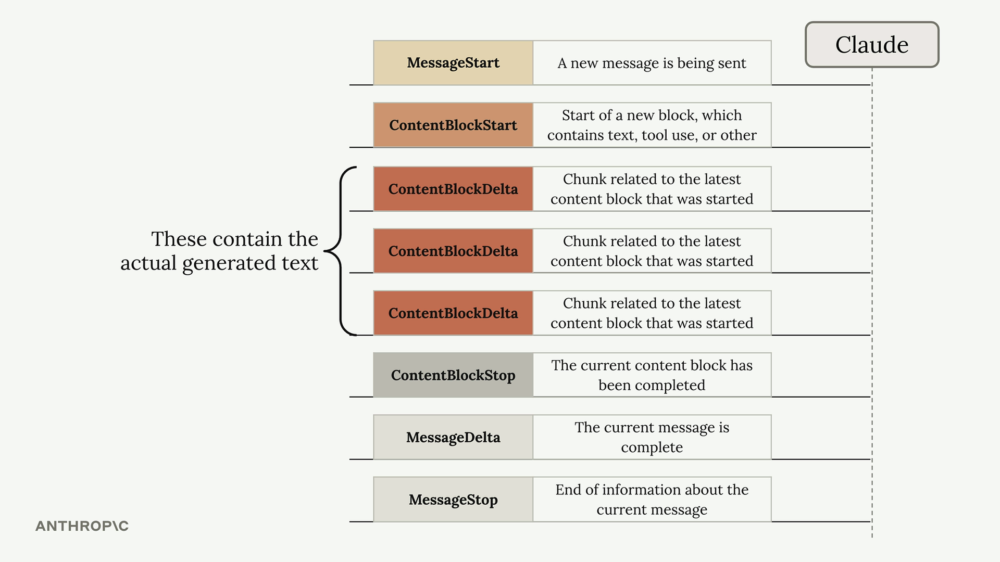
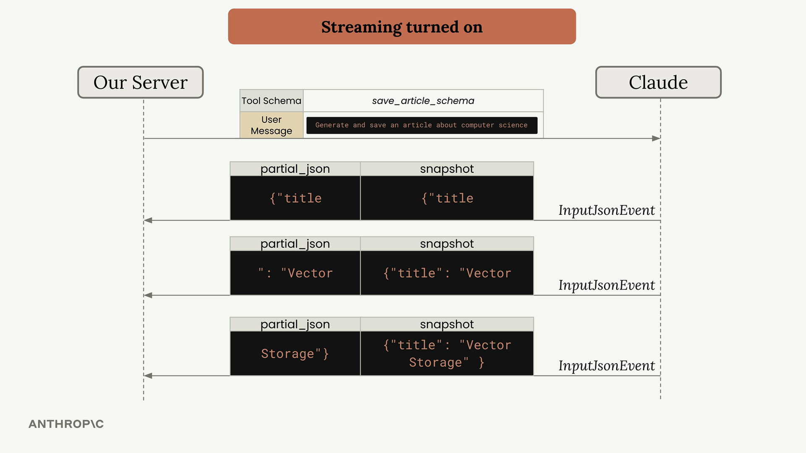
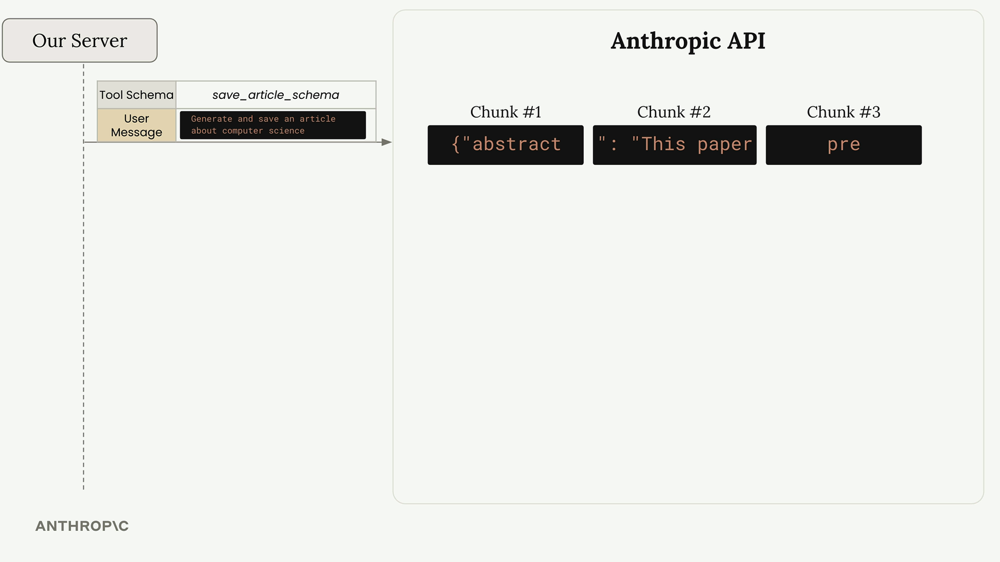
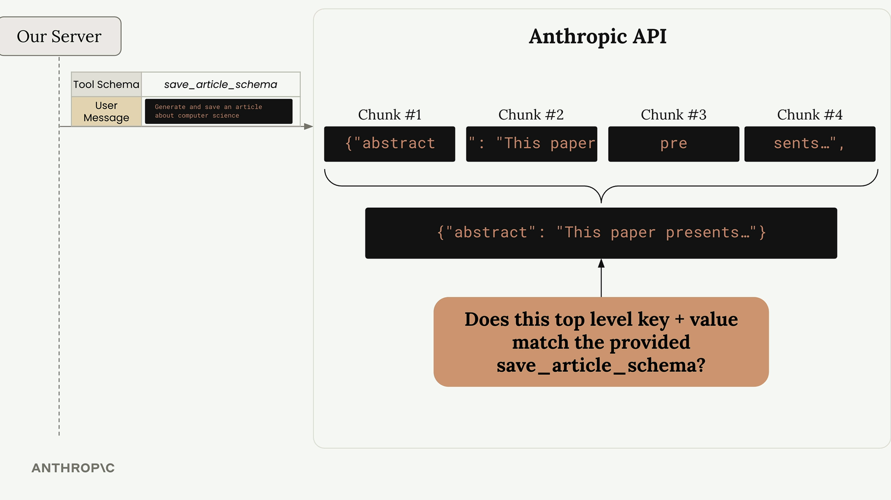
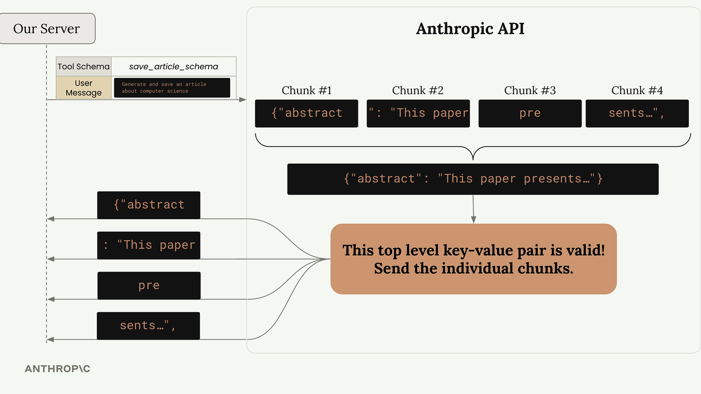
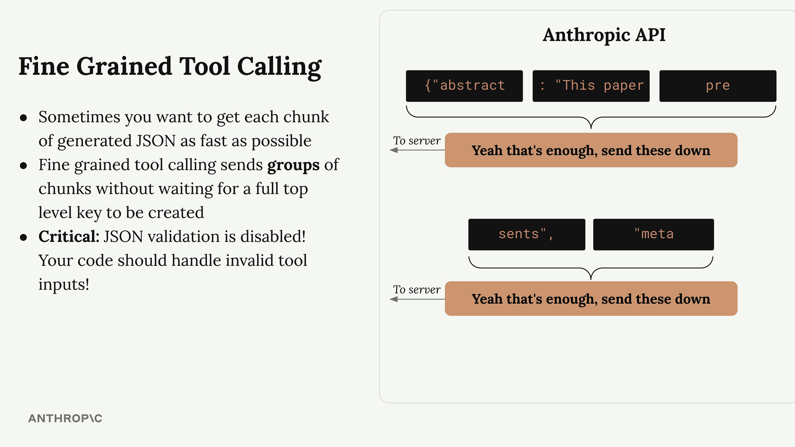

Fine-grained tool calling
Чему научитесь
Видео 10:56 и текст урока
К концу урока вы сможете:
- обрабатывать события
InputJsonEventпри потоковой передаче вызовов; - объяснить, почему аргументы инструмента приходят рывками;
- решать, когда включать fine-grained tool calling и как обрабатывать невалидный JSON.
Видео и текст урока.
Смотреть урок на Skilljar Fine grained tool calling · 10:56Если совместить tool use с потоковой передачей, вы получаете обновления в реальном времени, пока Claude генерирует аргументы инструмента. Интерфейс становится отзывчивее, но есть важные детали того, как это устроено внутри.
Потоковая передача вызовов
При включённом потоке Claude присылает события разных типов. Вы уже знаете события вроде ContentBlockDelta для обычного текста. Для вызовов инструментов понадобится обрабатывать ещё один тип событий — InputJsonEvent.

У каждого InputJsonEvent два ключевых свойства:
partial_json— кусок JSON с частью аргументов инструмента;snapshot— накопленный JSON из всех полученных к этому моменту кусков.
Вот как обрабатывать эти события в потоке:
for chunk in stream:
if chunk.type == "input_json":
# Process the partial JSON chunk
print(chunk.partial_json)
# Or use the complete snapshot so far
current_args = chunk.snapshot

InputJsonEvent: куски partial_json складываются в snapshot с заголовком «Vector Storage».Как работает проверка JSON
Вот что интересно: Anthropic API не присылает вам каждый кусок сразу, как только Claude его сгенерировал. Вместо этого API накапливает куски и сначала их проверяет.

save_article_schema и сообщение; в API приходят куски «abstract», «This paper», «pre»…API ждёт полной пары «ключ — значение» верхнего уровня, прежде чем что-то отправить. Например, если инструмент ожидает такую структуру:
{
"abstract": "This paper presents a novel...",
"meta": {
"word_count": 847,
"review": "This paper introduces QuanNet..."
}
}
API:
- дождётся, пока значение
abstractбудет полностью сгенерировано; - проверит эту пару по вашей схеме;
- отправит все накопленные куски
abstractразом; - повторит то же для объекта
meta.

Эта проверка объясняет, почему даже при включённом потоке вы видите паузы, а потом всплески текста: куски придерживаются, пока не будет готова полная валидная пара верхнего уровня.

abstract не станет валидной, а потом отправляет все разом.Fine-grained tool calling
Если нужен более быстрый и дробный поток — например, чтобы сразу показывать пользователю обновления или быстрее начать обрабатывать частичные результаты, — можно включить fine-grained tool calling.

Fine-grained tool calling делает одно главное: отключает проверку JSON на стороне API. Это значит:
- вы получаете куски сразу, как Claude их сгенерировал;
- нет задержек на накопление между ключами верхнего уровня;
- поток ведёт себя привычнее;
- важно: проверка JSON отключена — ваш код должен обрабатывать невалидный JSON.
Включается добавлением fine_grained=True в вызов:
run_conversation(
messages,
tools=[save_article_schema],
fine_grained=True
)
С fine-grained tool calling значение word_count может прийти гораздо раньше, не дожидаясь, пока будет готов весь объект meta.
Обработка невалидного JSON
С fine-grained tool calling Claude может сгенерировать невалидный JSON вроде "word_count": undefined вместо нормального числа. Приложение должно корректно обрабатывать такие случаи:
try:
parsed_args = json.loads(chunk.snapshot)
except json.JSONDecodeError:
# Handle invalid JSON appropriately
print("Received invalid JSON, continuing...")
Без fine-grained tool calling проверка на стороне API поймала бы такую ошибку и, возможно, обернула бы проблемные значения в строки, которые могут не совпасть с ожидаемой схемой.
Когда использовать fine-grained tool calling
Имеет смысл включать его, когда:
- нужно показывать пользователям прогресс генерации аргументов в реальном времени;
- хочется как можно быстрее начать обрабатывать частичные результаты;
- задержки на накопление портят пользовательский опыт;
- вы готовы реализовать надёжную обработку ошибок JSON.
Для большинства приложений поведения по умолчанию с проверкой вполне достаточно. Но когда нужна дополнительная отзывчивость, fine-grained tool calling позволяет получать куски так быстро, как Claude их генерирует.
Дальше
Следующий урок — встроенный инструмент текстового редактора: схему знает Claude, а реализацию пишете вы.
Оригинал урока: Fine grained tool calling.